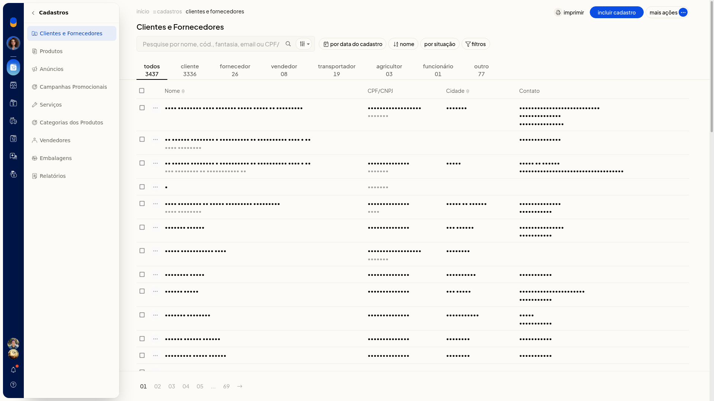
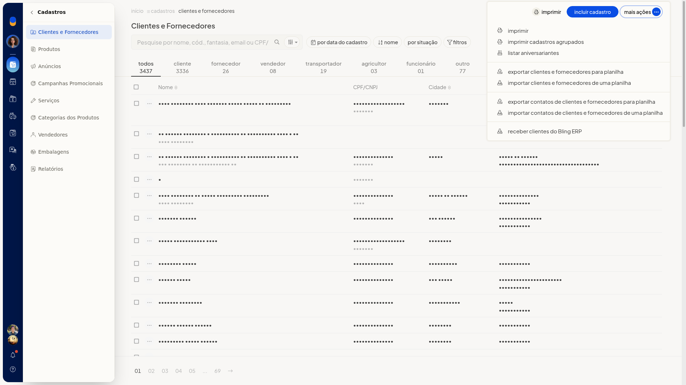

Listar aniversariantes dos contatos
No ERP da Olist, os contatos da loja ficam em Clientes e Fornecedores. A partir dessa lista, você consulta os aniversariantes dos contatos.
Instruções
-
Acesse Cadastros > Clientes e Fornecedores.

-
Clique em Mais ações.

-
Clique em listar aniversariantes.